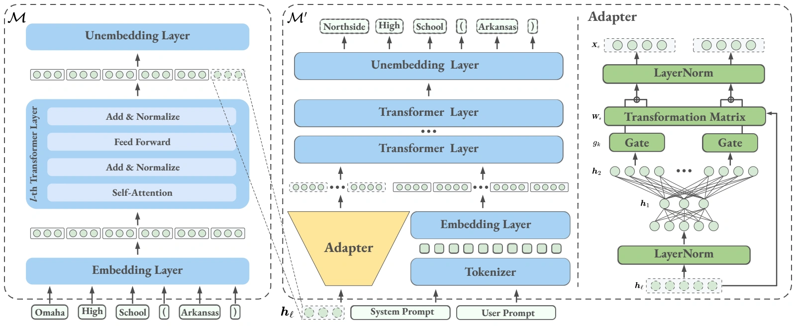
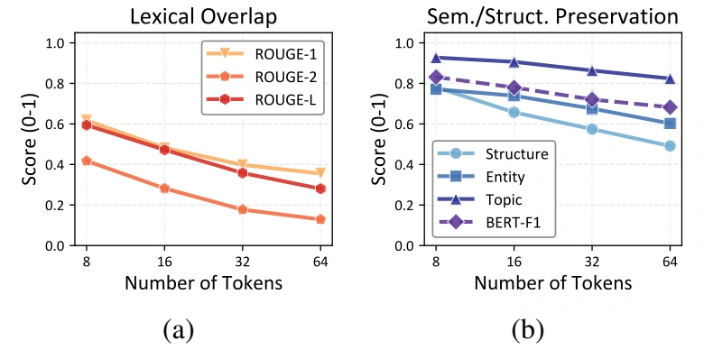
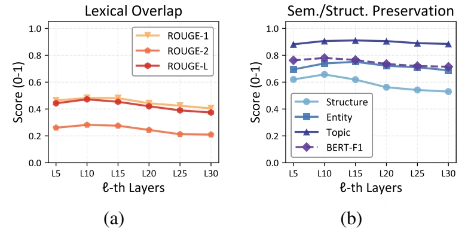

Extract one representation
Process an input sequence with the target LLM and retain only the residual-stream representation of its last token at a selected layer.
One hidden-state vector† Corresponding author
FROM REPRESENTATIONS BACK TO TEXT
Rep2Text learns to read a language model’s last-token hidden state—recovering roughly half of the unigrams in 16-token Wikipedia sequences, while preserving much of their meaning.

Large language models (LLMs) have achieved remarkable progress across diverse tasks, yet their internal mechanisms remain largely opaque. In this work, we investigate a fundamental question: to what extent can the original input text be recovered from a single last-token representation in an LLM? To this end, we propose Rep2Text, a novel framework for decoding text from last-token representations. Rep2Text employs a trainable adapter that maps a target model’s last-token representation into the token embedding space of a decoding language model, which then autoregressively reconstructs the input text. On Wikipedia-derived 16-token sequences, Rep2Text recovers roughly half of the tokens from a single last-token representation across multiple target and decoding model combinations, while preserving strong semantic coherence. Further analysis reveals a clear information bottleneck effect: as sequence length increases, token-level recovery declines, while semantic information remains relatively well preserved. We also find that scaling effects are less pronounced in inversion tasks. Finally, our framework demonstrates robust generalization to out-of-distribution clinical data.
THE METHOD
Reconstruct input text from one hidden-state vector, without iterative search at inference time.
Process an input sequence with the target LLM and retain only the residual-stream representation of its last token at a selected layer.
One hidden-state vectorA two-layer MLP with gated skip connections maps the representation into a sequence of embeddings in the decoding model’s input space.
Trainable adapterCombine the projected embeddings with system and user prompts. A decoding LLM then generates the recovered text autoregressively.
Frozen decoder by defaultCROSS-MODEL INVERSION
Layer-10 representations of 16-token Wikipedia sequences. Only the adapter is trained; the decoder remains frozen.
| Target model | Decoding model | ROUGE-1 | ROUGE-2 | ROUGE-L | BERTScore |
|---|---|---|---|---|---|
| A · Fixed decoder: target-model invertibility | |||||
| Gemma-7B | Llama-3.1-8B | 0.51 | 0.28 | 0.49 | 0.75 |
| Mistral-7B-v0.1 | Llama-3.1-8B | 0.52 | 0.32 | 0.51 | 0.81 |
| Llama-3.1-8B | Llama-3.1-8B | 0.48 | 0.28 | 0.47 | 0.78 |
| Llama-3.2-3B | Llama-3.1-8B | 0.45 | 0.25 | 0.43 | 0.76 |
| B · Alternative decoder: cross-model robustness | |||||
| Mistral-7B-v0.1 | Llama-3.2-3B | 0.52 | 0.32 | 0.50 | 0.80 |
| Llama-3.2-3B | Llama-3.2-3B | 0.46 | 0.26 | 0.45 | 0.76 |
| C · Qwen decoders: scaling and model-family effects | |||||
| Mistral-7B-v0.1 | Qwen-2.5-14B | 0.48 | 0.27 | 0.47 | 0.78 |
| Mistral-7B-v0.1 | Qwen-2.5-32B | 0.47 | 0.25 | 0.45 | 0.76 |
Selected mean scores from Table 1; standard deviations and structure, entity, and topic scores are reported in the paper. ROUGE measures token overlap, not the percentage of sequences reconstructed exactly.
WHAT THE REPRESENTATION PRESERVES

As input length grows from 8 to 64 tokens, ROUGE-1 falls from about 0.60 to 0.30. Semantic information is relatively better preserved. Llama-3.1-8B target and decoder, layer 10.

Recovery is strongest around layers 10–15. Structure and BERTScore peak around layer 10, while lexical and entity information remain strong into layer 15. Llama-3.1-8B, 16-token inputs.
A CLOSER LOOK
An in-distribution example from Table 3. Token F1: 0.94 · BLEU: 0.902.
GROUND-TRUTH SEQUENCE
Phil LaMarr
Phillip LaMarr (born January 24, 1967) is an American actor, voice actor, comedian and writer.
INVERTED SEQUENCE
Phil LaMarr
Philip LaMarr (born January 24, 1967) is an American actor, voice actor, comedian and writer.
This is a selected example, not the average result. The highlighted name differs by one character; high semantic similarity does not guarantee exact reconstruction.
BEYOND THE TRAINING DOMAIN
Trained on Wikipedia, evaluated on out-of-distribution clinical summaries. Mistral-7B-v0.1 target; Rep2Text uses a Qwen-2.5-14B decoder.
| Method | ROUGE-1 ↑ | Token F1 ↑ | BERTScore ↑ | Topic ↑ |
|---|---|---|---|---|
| Vec2Text Base | 0.14 | 0.13 | 0.53 | 0.21 |
| Vec2Text + Corrector (50 steps) | 0.13 | 0.11 | 0.52 | 0.20 |
| Rep2Text Ours | 0.37 | 0.26 | 0.74 | 0.64 |
Table 2, inputs of no more than 32 tokens. Rep2Text preserves coarse structure and meaning under domain shift, but may still alter critical details such as age and symptom duration.
REFERENCE
@inproceedings{zhao2026rep2text,
title = {{Rep2Text}: Decoding Full Text from a Single
{LLM} Token Representation},
author = {Zhao, Haiyan and He, Zirui and Tang, Yiming and
Yang, Fan and Payani, Ali and Liu, Dianbo and Du, Mengnan},
booktitle = {Advances in Neural Information Processing Systems},
year = {2026},
url = {https://arxiv.org/abs/2511.06571}
}